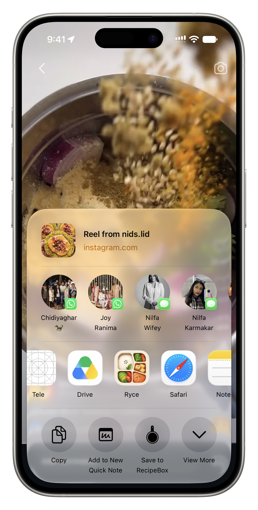
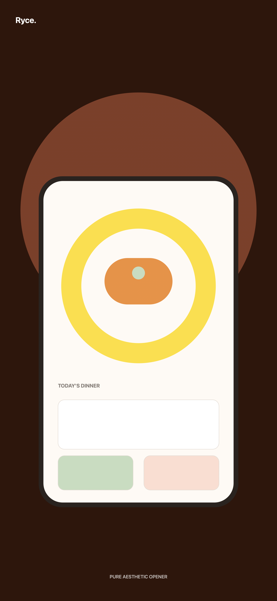
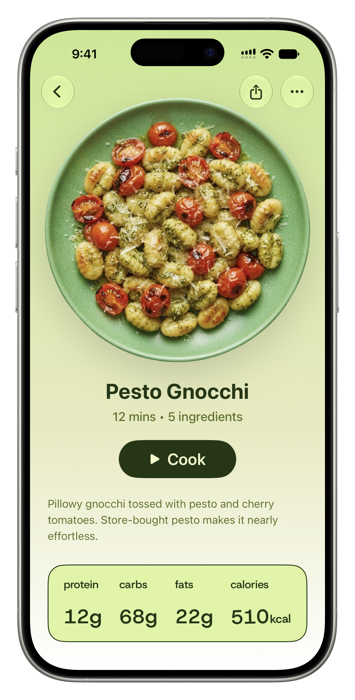
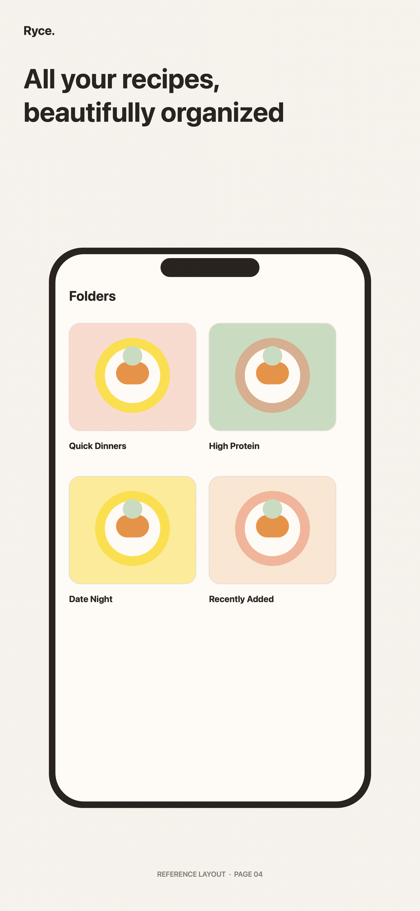
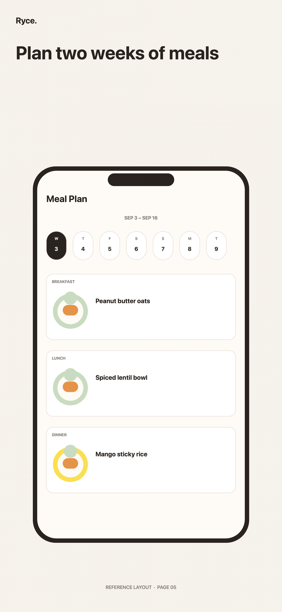
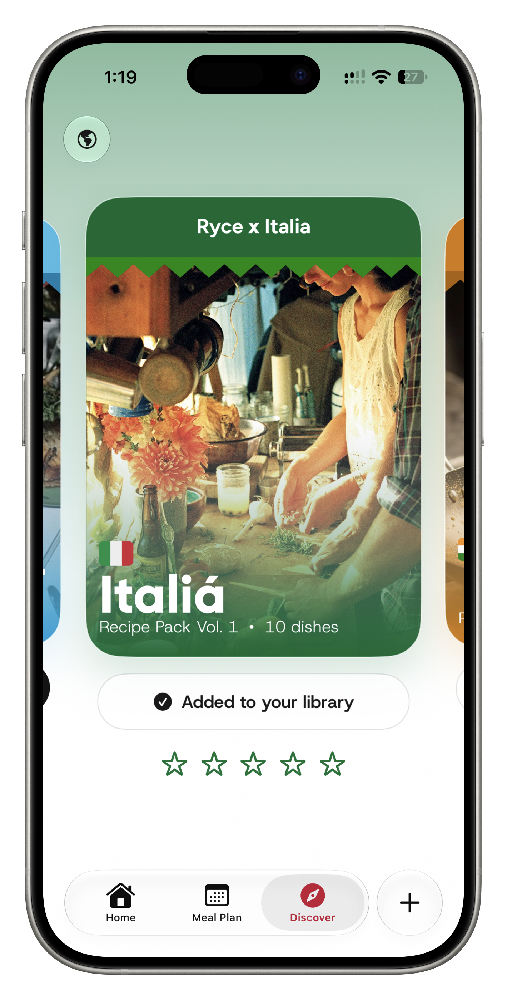

A story from Niyat Studio
It was never about
who would cook.
Ryce began with a newly married couple, an endless stream of saved videos, and one question that arrived every evening: what should we make tonight?
Made by two people who love cooking for each other.
When we got married and started living together, it was our first time living without our parents.
Almost every day, we had the same conversation: who would cook? At first, cooking felt like one of the things that stressed us most. But eventually, we realised that we were both genuinely happy to cook for each other. That was never the problem.
The problem was deciding what to cook.
We started looking everywhere: Instagram, YouTube Shorts, and the food videos that began to take over our feeds. Soon our whole algorithm was giving us breakfast and dinner recommendations, and we would send them back and forth to each other.
“What if you made an app that could directly import all these recipes from Instagram and store them in a structured way?”— Nilfa
That was the beginning of Ryce.

I wanted Ryce to feel unlike a recipe manager: simple, useful, and beautiful to open.
When you open Ryce, you see only what matters: your next meal. If it is not what you feel like cooking, a single shuffle creates a beautiful transition and suggests something else. The homepage keeps your next three meals in view—only the information you need, and nothing more.



A next-meal view, thoughtful folders, and a calm path back to the recipes worth keeping.
My wife and I would often sit down on a Sunday and plan our week’s meals. It helped us shop ahead, do a little prep work, and make cooking throughout the week feel easier.
That ritual became Ryce’s Meal Plan: a simple way to plan meals up to two weeks ahead, so a good idea saved on Tuesday can become dinner on Thursday.

Food is one of the ways we love to travel.
Whenever we travel, trying the food of that region is a priority. That led to Ryce Packs: highly curated, collectable recipe drops from a specific part of the world, with new packs arriving over time.
And because I am a geography nerd, the Discover page also has a 3D globe. You can spin it, tap a region, and find recipes from that part of the world to save for later. The idea came while I was playing a geography game: what if you could discover food from anywhere in the world?
It is my favourite part of Ryce. It is playful and engaging, but it also reveals patterns: spice across the Indian subcontinent, rice and fish through Southeast Asia, and the endlessly surprising ways a place shapes what ends up on a plate.

The whole point